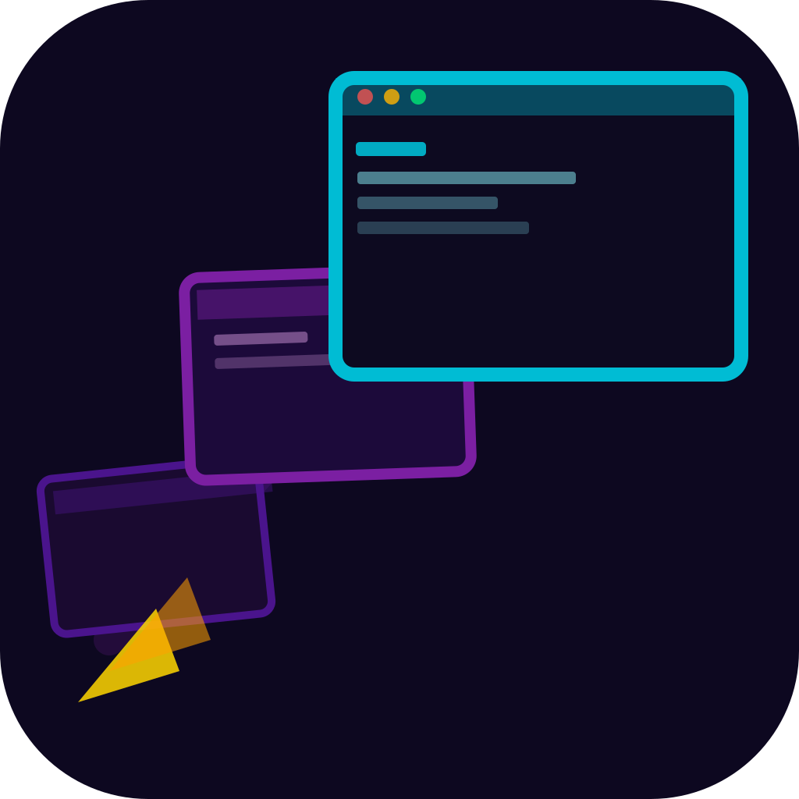
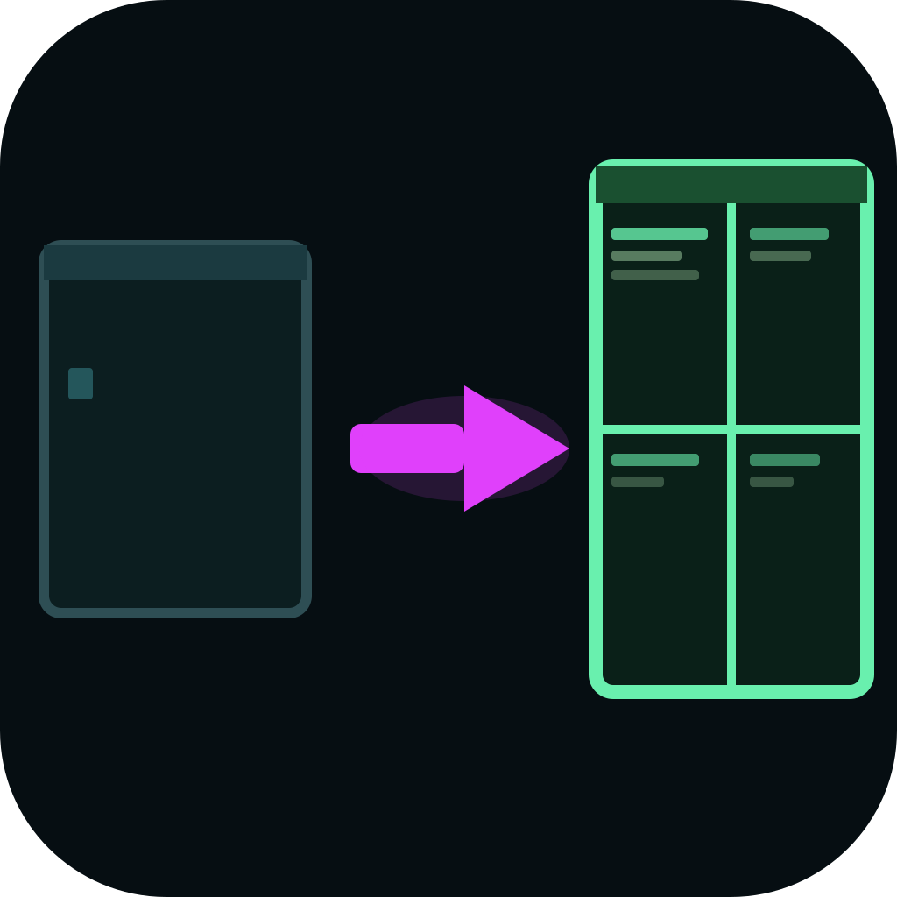

Pane.Cast — 아이콘 후보
Candidate_20260321_0250 | Windows Terminal 세션 레이아웃 저장/복원기

icon_01.svg
대각선/동적 · metaphor
터미널 창 3개 분출
다크퍼플 + 시안 + 골드
icon_02.svg
레이어드 · literal
세션 카드 부채꼴
다크올리브 + 라임 + 마젠타

icon_03.svg
공간/장면 · hybrid
빈 터미널 → 4패인 복원
다크틸 + 라임그린 + 마젠타